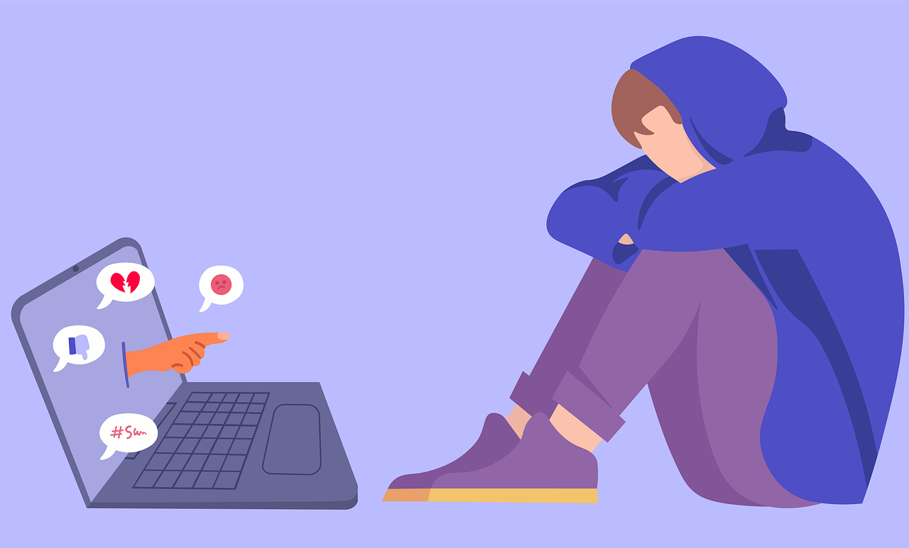
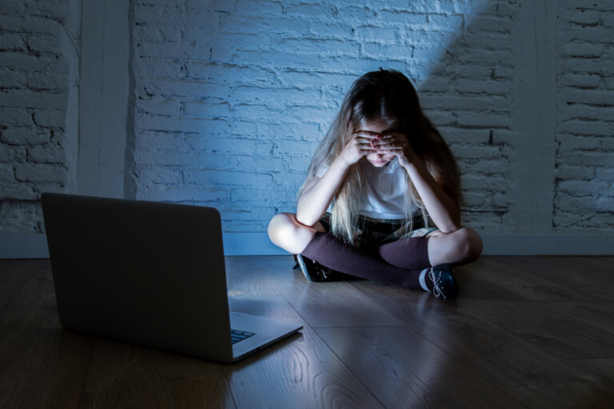

Es una forma de acoso que utiliza internet y dispositivos digitales como: teléfonos y tablets.
Esto para molestar, humillar y amenzar una persona de manera repetida.
¿como se manifiesta el ciberbullying?
.Difusion de informacion falsa: Publicar mentiras o rumores sobre alguien.
.Contenido humillante: Compartir foto , videos o audios vergonzosos de la victima.
.Mensaje ofensivos: Enviar textos , imagenes o videos amenazantes o abusivos.
.Suplantacion de identidad: Crear perfiles falsos o enviar mensaje en nombre de la victima.
.Exclusion: Crear grupos para agredir o burlaser de alguien.
Que hacer si sufres ciberbullying
.No respondas: Bloquea al acosador y no contestes sus mensajes.
.Guardar pruebas: Conserva los mensajes , fotos o videos que te envien.
.Busca ayuda: Habla con tus padres , u tutor , profesor o un adulto de confianza.
.Denuncia en la plataforma: Reporta el contenido o perfil del acosador a la red social o plataforma donde ocurrio.
.Contacta a las autoridades: En el caso graves o de amenaza fisica , contacta a la policia.
Como protegerse
.Usa la configuracion de privacidad: Limita quien puede ver tu informacion en redes sociales.
.Se cuidadoso con lo que publicas: Piensa bien antes de conpartir algo.
.No compartas informacion personal: No reveles datos como tu direccion o informacion intima.
.Educacion a los niños: Enseñales a ser responsables en el manejo de la tecnologia y a no participar en actos de acoso.
El ciberbullying es el maltrato que sufre un menor de edad por parte de otros chicos menores de edad a traves de internet u otros medios electrónicos.

El acoso consiste en utilizar la tecnología para amenazar , avergonzar , intimidar o criticar a otras personas.
La búsqueda de poder y anonimato en línea , el desos de venganza o resentimiento , la falta de empatía y la facilidad con la que se minimisa el daño a través de la pantalla.
Volver a la pagina prncipal